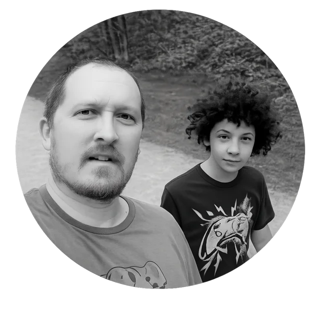

Developer · Game creator · Local AI explorer
I learn by building.
I’m exploring game development and local AI through practical projects, honest experiments, and notes shared along the way.

Three threads.
One maker.
Games, local AI, and an open notebook of the work in progress. Each project has its own identity, but they all start with curiosity.
01 / GAME WORLD
02 / LOCAL AI LAB
03 / NOW BUILDING
PetalScroll Studios
Nature-first games inspired by folklore, discovery, and quiet wonder.
TWLT
Benchmarks, tutorials, tools, and lessons from consumer hardware.
Open dashboard
A public snapshot of tools, progress, milestones, and the current creative stack.
Working belief
Interesting technology matters most when ordinary people can actually run it, understand it, and make something of their own with it.
Build with real constraints.
Share what actually happens.